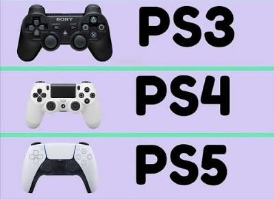

The part of the console you actually hold.

The PS3 shipped with a controller that looked almost identical to the one that came with the original PlayStation in 1994. The real changes were underneath. It connected over Bluetooth instead of a cable, charged over USB, and added motion sensing so the whole pad could be tilted and turned. The first version, the Sixaxis, had no rumble at all because of a patent dispute, and the DualShock 3 that replaced it in 2008 put the vibration back.
The DualShock 4 was the first real redesign in nearly twenty years. Sony reshaped the grips and the triggers, then added a clickable touchpad, a light bar on the front, a small speaker, a headphone jack, and a Share button for recording and streaming. All of that came at a cost: the battery lasted noticeably less time than the PS3 pad it replaced, which is still the most common complaint about it.
The DualSense changed what the controller can do rather than what it has on it. Its adaptive triggers can stiffen or push back partway through a pull, and its haptics can produce far more detailed sensations than a spinning weight ever could.